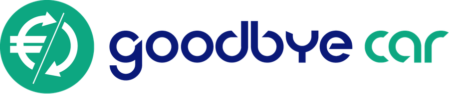

AccueilParticuliers
Votre vieille voiture,
reprise gratuitement,
recyclée légalement.
Goodbye Car, le service d'INDRA, organise l'enlèvement de votre véhicule par un centre agréé près de chez vous, en ligne et sans paperasse. Vous recevez un certificat de destruction : votre responsabilité est levée, votre voiture est dépolluée et recyclée à plus de 95 %.
Demander une reprise sur goodbye-car.com
